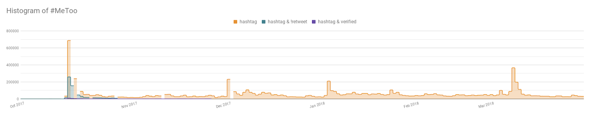

MeToomentum: Analysing data behind the #MeToo
Written: some time in 2018
Valentina D’Efilippo, a visual designer and creative director, approached me now over a year ago with an idea of visualizing #MeToo movement as a part of Data Obscura exhibition. Because I was already following the movement and knew about the impact it already created, I was eager to chip in with my skills and knowledge.
More about the motivation and the design process of the MeToomentum project was described by Valentina in The anatomy of a hashtag — a visual analysis of the MeToo Movement.
Preliminary Research
Before searching for any particular data, it is crucially important to understand what the subject is about. Especially regarding #MeToo, it was of most importance to get the facts and main contributors right. I’ve spent my first weekend just reading through heaps of articles that were also referencing movements that happened years ago. Of all, article about the start of the movement by Tarana Burke and the shockwave around the world it created since last year are worth mentioning.
Many articles mentioned the sheer number of posts on social media - only in the first month of the movement, Facebook had around 12 million posts, comments and reactions to #MeToo, Instagram around 1 million posts with #MeToo and Twitter around 1.7 million tweets with #MeToo (source).
Getting all of the data was not technically possible because, understandably, much of the data from Facebook would not be public (source) and Instagram API was at the time of development being deprecated and replaced by Instagram platform (source) which could cause trouble with retrieving all necessary data. Because of the short time and the fact that I was the only developer on the project, we decided that the main source of getting a reasonable amount of data in time for the exhibition was Twitter. While waiting to get the developer account approved, I was diving in documentation of the Twitter API.
Wrapping my head around the three types of search APIs and the different options of each of the query engines took a while, especially when trying to figure out how many queries would be necessary to get a dataset that would allow us to get insights from. It is hard enough to have all the data for analysis or for creating a representative subset, but having a limited amount of requests to get some sort of representative subset required to come up with a plan (and hope for the best).
Premium Twitter API does not have a query option to retrieve only the most popular tweets per period, therefore the only option to avoid getting tweets with very low responses or outright spam was to collect tweets that came from verified users. Even though non-celebrities are also getting accounts verified, we were seriously worried that we would get a skewed dataset towards celebrities.
Another issue to which we could potentially run into was the scope of the conversation because we would be able to collect tweets only with the hashtag. When looking at trending tweets in the first hours of the movement on Twitter, you may notice that some of them were not containing the hashtag (they are actually not containing any hashtags at all). Please note that these linked tweets may be traumatic or triggering:
Read further to find out how we acquired popular tweets from regular people and also tweets related to #MeToo but not containing the actual hashtag.
Because we knew we would only scratch the surface with our dataset, we decided early on that we would not be trying to draw any conclusions, rather focus on visualizing the journey of the movement.
Gathering Data
Twitter API allows you to get counts on your query, which means you will find out how many tweets you will get when querying for the actual data. This allowed me to see how much tweets were created in a given period.
To limit the number of queries (because queries as well as counts are both counted into your pre-paid limit), I counted the number of all tweets with #MeToo for the whole period we were observing spikes in data, so that we could cross-reference them with events that triggered them. Then, I counted original tweets in the first month to see what percentage were only original tweets. Lastly, I counted the number for the first three months of the category for which I would be gathering the data to get a picture of how much data we could expect (and to see whether that would be a reasonable number at all).
To see the counts of the last category more clearly, let’s switch to logarithmic scale:
(You can see that #MeToo was used before October 15th, however in different and various contexts.)
While gathering data, I was validating and checking the retrieved data with a list of tweets that I created while reading articles in the first phase of the project. The list included tweets that were essential to several discussions that raised from tweets or promote awareness to issues also related to sexual harassment.
Another source for validating whether the tweets I got were popular and reached the most people in the first hours of the movement was a dataset scraped by by Erin Gallagher with which she created a Network visualization of #MeToo created from more than 24,000 tweets. Thank you, Erin, again for kindly sharing!
Twitter API provides tweets in JSON format where each tweet datum contains a number of information such as timestamp, hashtags, text and user object. Also indication whether a tweet is a reply or a retweet is stated (however, the retweet flag is a curious and quite often a very confusing piece of information). When a status is retweeted or quoted, the API provides the full Tweet object for that original tweet. Therefore, as mentioned above, only one verified person retweeting or quoting with #MeToo was enough for us to catch the original tweet which didn’t have to satisfy any condition. This helped us to gather the above mentioned tweets from the beginning of the movement. And how about ordinary people with not many followers or people without the blue mark next to their name? Non-verified users appearing in the dataset with varying number of followers (again, please note they may be triggering):
- Kayla Alex Todd (~70 followers)
- Cait Errin (~200 followers)
- Yassmin (~1k followers)
- Mattie Kahn (~3.5k followers)
- Frederic Pommier (~11k followers)
- Eva Piquer (~40k followers)
And what was the plan if the API would not deliver whole Tweet objects? In case it would deliver only the IDs of the tweets, upgrading to a higher limit would be a quick solution to be able to retrieve those tweets even if it would require more requests. And if only celebrities would be included? Well, then manual search and explicit retrieval of those excluded tweets were on my backup-plan list.
Cleaning Up the Dataset
The gathered dataset of tweets by verified users and containing #MeToo was containing nested not only original but also spammy tweets (as expected). Therefore, picking out original tweets and filtering out those unrelated ones was a crucial stage before any analysis could take place.
The original dataset had around 190k tweets and after the extraction of the nested data it comprised of around 220k tweets. For easier handling of the data, I had to create several categories for filtering out unrelated tweets.
Excluding conditions:
- Time: many tweets were referencing old hashtags and conversations that were happening before #MeToo but to stay focused on one topic, we were considering only tweets since October 2017
- User: manually created list of users which tweets were either unrelated or spam (such as NRA; fortunately this list had only a couple of accounts)
- Tweet: manually created list of tweets that were outliers in the “grey area” and were not picked out by other conditions because they didn’t include any hashtags or were obvious spam
- Hashtags: unrelated topics about tax debate or gun control
- Words: usually related to the hashtags, such as gun or shutdown
Including conditions:
- Hashtags: #MeToo and its variants, such as french #BalanceTonPorc
- Words: misconduct, harassment and other words describing horrible acts
If a tweet was within the time frame and was not included in the blacklist of tweets, including conditions always took precedence over the excluding conditions; meaning if #MeToo was found in the tweet as well as blacklisted hashtag #SecondAmendment, the tweet got included in the final dataset.
The filtering conditions were intentionally not too harsh so that the “grey area” of tweets was left rather larger and any couple of outliers would be picked out in later stages of analysis, so in the end, the amount of filtered out tweets was around 1k. This may seem like a small number but do remember that we were already capturing tweets with #MeToo so these filtered tweets were mainly coming from original tweets.
When going through the tweets belonging to the “grey area” it was usually debatable whether they were discussing of focused on just one issue. But this nicely shows that our conversations happen in context of each other and that sometimes seemingly unrelated topics can crossover. And in cases of tweets that were from disputable accounts, they were left to drown within the big data.
While cleaning out the dataset, I was visualising each iteration of the filtered dataset on a timeline which helped with identifying outliers (this is where I started creating manual lists of tweets or accounts which were meant to be discarded).
One version of the dataset where tweets are rendered on a timeline and their height corresponds to the number of retweets, those with more than 30k retweets are highlighted with label:
Data analysis
The dataset includes more than 30 parameters of tweet (timestamp, language of tweet, number of favourites, number of replies, number of retweets, targeted or replied tweet, user’s name, user’s profile photo, user’s number of followers, user’s number of favourites, user’s number of favourites, user’s location, ...). Therefore, choosing a starting point for analysis was crucial, especially the time given - we had a couple of weeks until the exhibition deadline - but having scrapped tweets for the first six months of the movement with some questions already on our mind, it was pretty clear which data parameters we would explore - time and user’s influence on how their tweet got attention.
The only data analysis of the movement I stumble upon my search was created by Hugo Bowne-Anderson and he described his results in the article How the #MeToo Movement Spread on Twitter. He was collecting all data with #MeToo also from Twitter on October and November 2017. Overall he got around half a million tweets and his analysis shows that most of the tweets were retweets and most prominent language was English. Since reading his article, I was curious if we could catch the most retweeted statuses.
One of the first checks was validation of the data set - did the data set followed the same trend pattern as on Twitter? I used the counts collected in the first phase of data gathering to create the chart below. The number of tweets with #MeToo on Twitter in blue is overlayed with number of tweets in our dataset in green to see whether we would cover the main events and what was the trend over time. You can see that proportionally and trend-wise they match very well so the retrieved dataset is a nice ‘cut’ through the dataset. (The zeros in the Twitter path were returned by the API as errors, I presume; for this quick proof viz I didn’t have time to play to also create a visual gap as this wasn’t used anywhere else outside of my data analysis part of the project (well, and now here)).
Tweets on a timeline for the whole time frame where three different parameters are mapped - the number of replies, number of retweets and number of favourites - we can see that retweets and favourites are correlating and that there is one outstanding outlier in replies - Alyssa Milano’s tweet - followed by a second - Ivanka Trump’s tweet:
And the same but only for the first two days to see who participated in the most active 48 hours of the movement:
It is interesting to see that almost half of the tweets does not have any retweets. Those with more than a hundred retweets were no more than 3% of the whole dataset, but still that leaves around 8,000 tweets:
How much of these are retweets or quotes (overlapping area chart):
Languages
When it comes to languages, Twitter supports more than 50 languages, however, they are machine detected so sometimes the correct language cannot be determined and then the lang attribute of the tweet is set to Undefined (there was not a significant number of undefined lng types in our dataset). As expected, most tweets were in English.
Leaving aside English shows that other languages have comparable amounts of tweets with peaks that can be traced to local news. There are three unmissable moments where all languages spike at the same time -- the obvious start of the movement, Time Magazine’s Person of the Year announcement in December and International Women’s Day in March.
Twitter users reach
The animation illustrates how many tweets had a given impact – starting from all ~200k tweets where the biggest audience was from Ellen DeGeneres (~77M followers) and continuing progressively downwards to tweets by people who have around 10 followers. This shows that everyone was tweeting about MeToo, not just celebrities.
Chart explores correlations for tweet’s retweet number and the user’s followers number, filtered only those which have more than 100 retweets. Grouping of tweets is by date, not particular order. Circle size is mapped to the number of retweets, where intuitively, the bigger circle size, the more it was retweeted. Circle color is mapped to user’s followers number, going from light blue to gold yellow color.
Max 11m followers and min 1k retweets: (user with max followers is SerenaWilliams)
Max 4m followers and min 1k retweets within first two days
Location
Even though tweets can be tagged with a location, not many included it, therefore the location from users was used. Although this field is manually filled by each user, because we gathered verified users the information can be assumed to be valid and also again, with so much data, outliers will not change the overall trend.
Obviously, one of the first things to do when you have geo data available is to plot them on a map (even though you can’t change the default and only projection). Location of tweets where circle is sized and colored according to the overall number of tweets.
Number of tweets sorted by location show that the opposite sides of America were the two most popular places by far. Within the top ten places there is Australia and India too. (Top thirty countries illustrated on the image)
Looking at the potential reach of users that tweeted #MeToo with color mapped continents reveals that users not only in the US or Europe but also in India and Mexico have more than 100 million followers combined (not unique as this couldn’t be found out from our dataset, just an illustrative sum of all users followers number).
(X axis is mapped to the number of users; Y axis is mapped to the sum of followers of users; Size is mapped to the sum overall number of tweets)
There were several tools explored for finding out the sentiment or tone of the tweets. As expected, none of the tools provided satisfactory outcomes as the texts were either too short or too ambiguous. Manual annotation would be not only time consuming, as with any annotation task, we would have to solve what and how to detect first. More importantly, assigning any sentiment and using it for the visualization would influence the viewer and could take the focus from the contents and issues of the tweet to thinking why such tone was assigned. Therefore, we decided that we would leave this task to each viewer.
For illustration why sentiment analysis lead to nowhere, let’s look at the results of IBM’s Watson Tone Analyser. It offers recognition of six different tones -- Analytical (navy), Anger (crimson), Confident (violet), Joy (canary), Sadness (cobalt), Tentative (turquoise) -- for each sentence as well as the tone of the whole document. Unlike many other tools, Watson Tone Analyser allows you set the text type to tweets.
On the example below, you can see an overview of around a hundred analysed sentences - grey row values highlight those sentences where no tone at all was assigned. As one of the first observations, you can see that the tone doesn’t depend on the text length -- many sentences, whether short or long, were assigned no tone.
And although it seems like many sentences have been assigned one or several tones which could be used for the purpose of the visualization (for at least some subset of the data), when reading through the analysed data, it is obvious that many sentences were assigned either “analytical” or “tentative” tone which does not really add any value. Moreover, the “joy” tone came up as false positive in many tweets, as is illustrated on some of the examples below, which proves that context is everything:
Conclusion
The analysis of #MeToo revealed that the movement was truly global and the discussion broadened into many different issues. Everyone was trying to get heard, whether a celebrity or a person with smaller following.